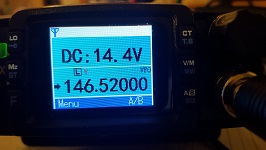
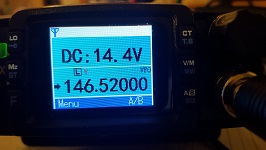

Apparently TYT locks new radios sold in the USA to 150-160MHz VHF and 450-460MHz UHF. In order to use them for the amatuer radio services the transceiver needs to be unlocked. My unit was used and already setup for the ham bands so I haven't verified the unlocking procedure myself.
To unlock make sure that the TH-8600 is turned off. Hold the "LO" (top left) button and the "A/B" (bottom right) button while turning the TH-8600 on.
The TYT provides several downloads for the TH-8600 at https://www.tyt888.com/download.html, however there isn't much description to what these downloads are. Here's my take on these files. The date on the download is changing each time their download page is revised so it doesn't really indicate anything. The title here matches the link on the the download page.
- TH-8600 new CPS 20221020 (20230605095410_6513.zip)
As of December 2023 this is the latest version of the programming software. The installer shows version 1.7 but the About dialog of the program shows version 1.8. Installation still needs admin right. Look at "TH-8600 FOR USA" to see screen shots and a discussion of the programming software.
Local mirror: download
- TH-8600 firmware (20210706094944_9048.zip)
Containts the "TH-8600_20190506 .exe" which is the "V1.7" version of the programming software according to the installer. I didn't go through and actually installed this version. Included is also the "Th8600_UpdataFile2020_12_24_2_22JT.icf" firmware with the installer program "TH-8600_UpData.exe".
Local mirror: download
- TH-8600 FOR USA (20210706093350_8658.zip)
Contains the "TH-8600_20171206 .exe" which is the "V1.5" version of the programming software. The installation program needs to run as administrator. [Yes, that's not good practice]. After install, the local user can be granted write access to the installation directory of the programming software. This allows regular users to use the software and makes things a little less bad.
Installing the programming software also places the Prolific USB driver installed in that directory. I did not thest this driver since I already had a Prolific USB driver installed.

The download also contains the "Th8600_UpdataFile2018_12_07_2_20JT.icf" firmware and the installer program "TH-8600_UpData.exe" in the "Update File" directory. I'm not sure what updates this firmware contains and I haven't had the guts to install it yet. If you have more info please let me know.

Readable "instruction.doc" describing the firmware installation procedure: download
Local mirror: download
- TH-8600 LCD software (20210706093315_3138.rar)
This is a little utility to determine and set the LCD display type. Apparently there are three different types of LCDs.

To use this utility choose the COM port in "Settings" -> "ComPort Select". Then click the "Read LCD" button. At this point the message "TETS MOD" is displayed on the LCD of the TH-8600. The drop down list will have the LCD type listed that is currently being used. Select other LCD types via the drop down list as desired. Click the "Exit Test" button to finalize the selection and close the connection.

 

My tranceiver uses the "LCD 3". "LCD 1" is upside down and "LCD 2" is mirrored for me. I guess this feature allows for some interesting customizations or projects with the radio.
Local mirror: download
- TH-8600 software (20210706093837_5518.rar)
The download contains the "Th8600_UpdataFile2017_06_10_2_8JT.icf" firmware with the installer program "TH-8600_UpData.exe" in the "Update File" directory. The 写频软件 directory contains the programming software. I wasn't able to run it and check it out but since this is an older download these files are of no real interest. There is also a Chinese document that list the changelog to the firmware. You could use Google translate but unless you're into firmware hacking there is nothing interesting.
Local mirror: download
- TH-8600 software 170817 (20210706093042_1518.zip)
Contains the "TH-8600_Test .exe" which is the older version "V1.2" of the programming software. There exists also a "USB Driver" folder that appears to have drivers for Windows 98ME, XP, Vista, and 7.
Local mirror: download
- TH-8600 software (20210706092946_8298.zip)
Contains the "TH-8600 .exe" which is the older version "V1.1" of the programming software.
Local mirror: download
- TH-8600 (20210705181618_6398.rar)
Just the pamphlet for the radio.

Local mirror: download


{kind=link}